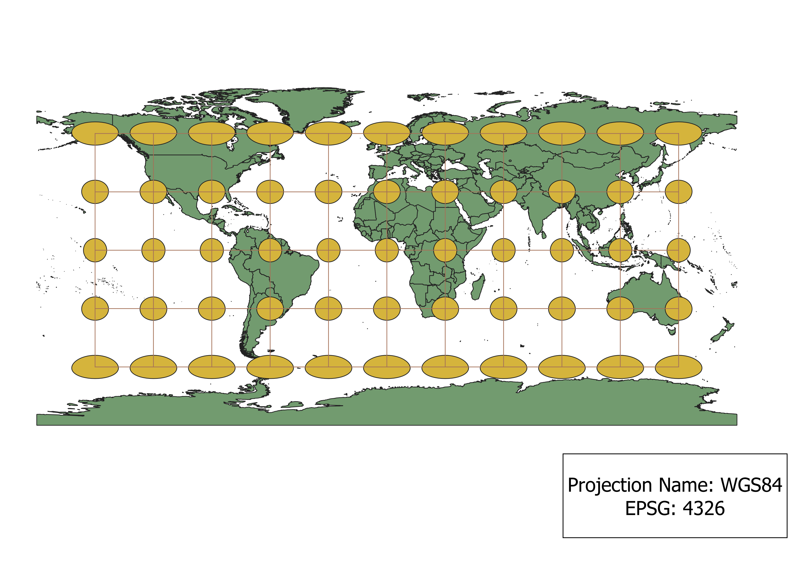
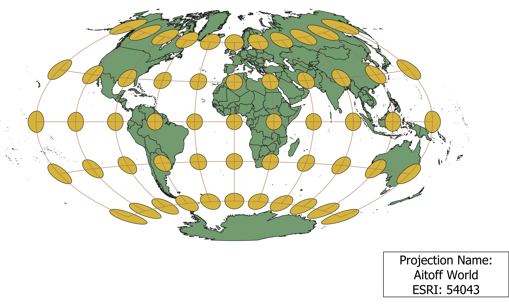
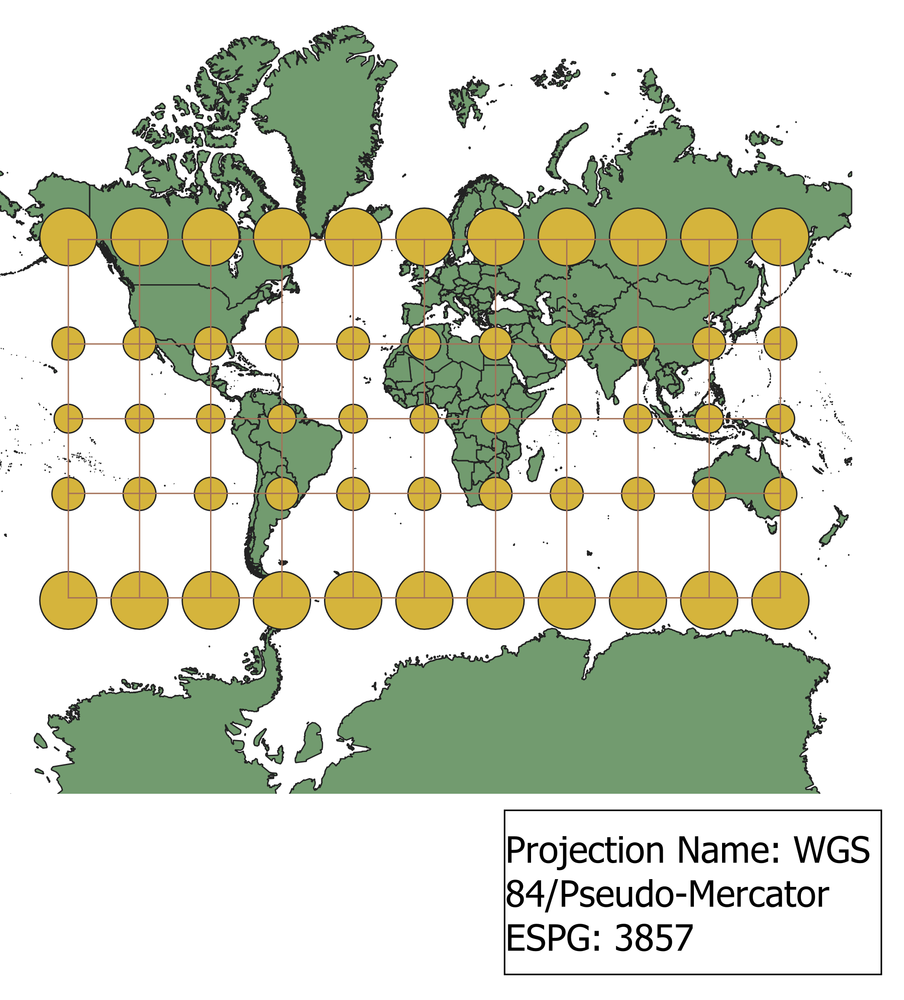
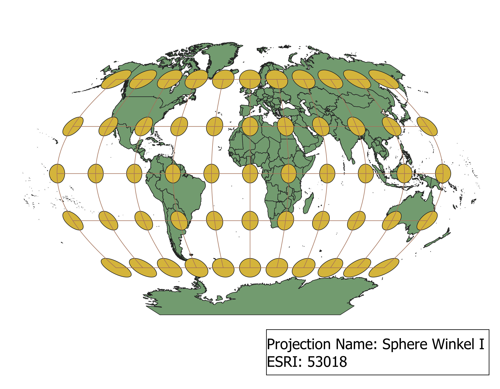
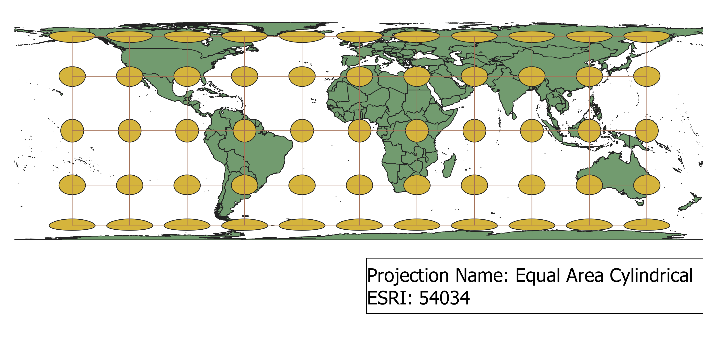
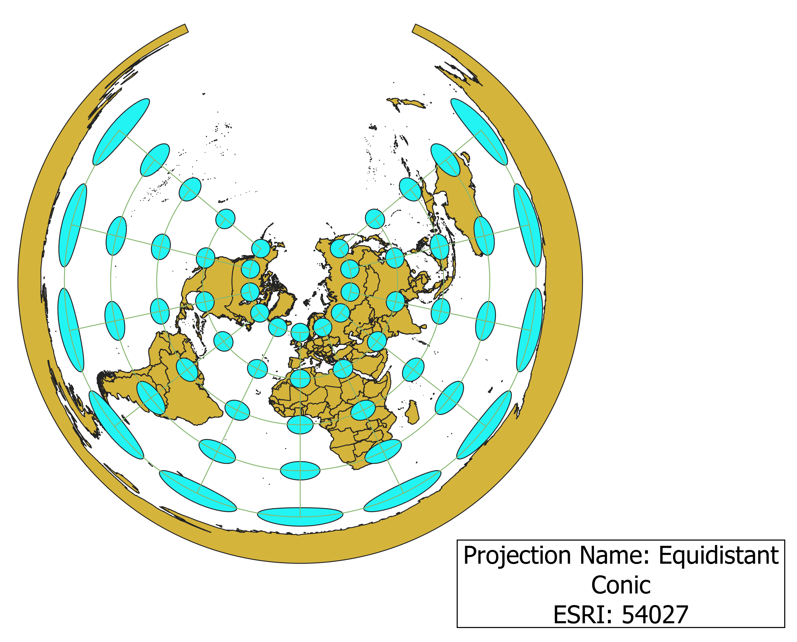
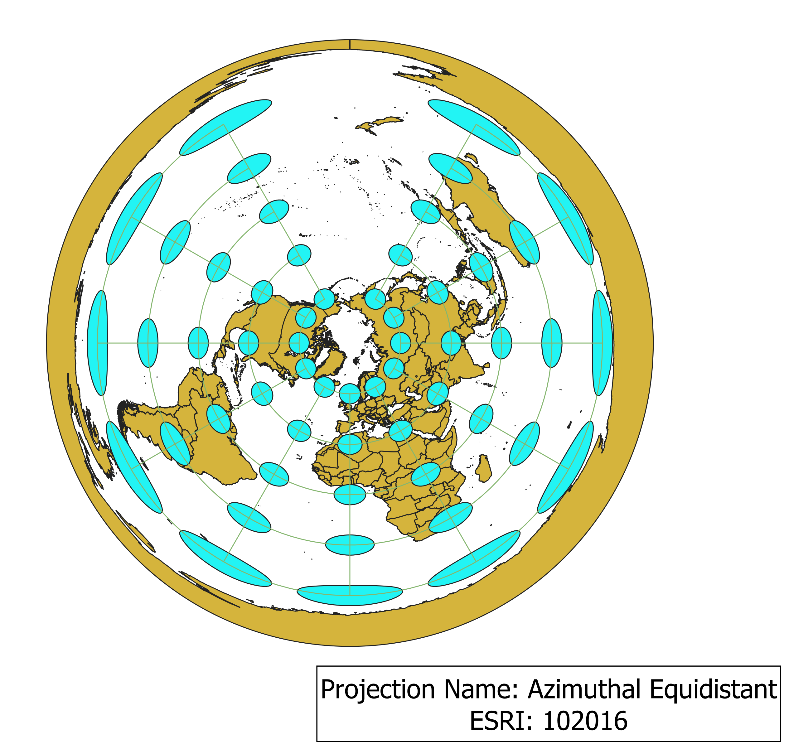
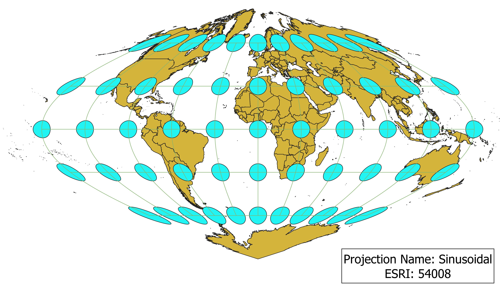
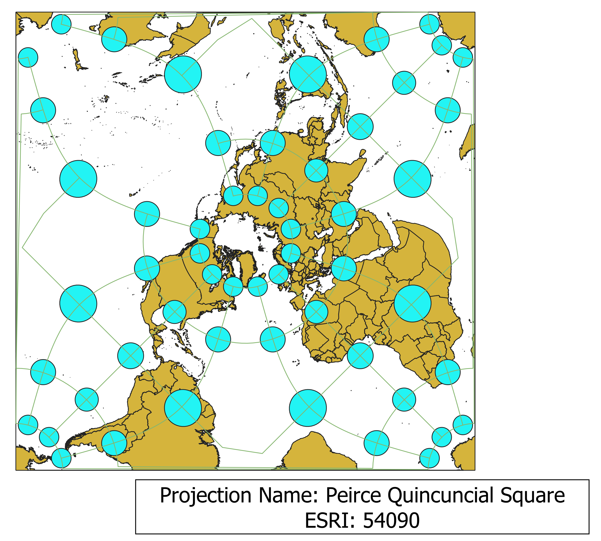

In this project I learned how to display images in different projections.
Describe in your own words how you displayed the map in different projections using QGIS
In order to change the projection model used in each map display, I first clicked on the icon in the bottom right corner of the screen. From there, QGIS allows any projection model to be search and selected. Installing the Indicatrix Mapper plugin allowed me to show the Tissot circles on each map. These circles are helpful in identifying which aspect of the map is distorted.
WGS84 Projection
Some Observations: This projection appears to be cylindrical, mostly preserving area. The size of the Tissot circles stays relatively consistant, except at the poles. The northern- and southern-most landmasses are the least accurate, as their Tissot circles are the most distorted. Direction is not preserved at all in this projection.

Aitoff Projection
Some Observations: This projection seems to be azimuthal. It attempts to preserve direction. Distance between each row of Tissot circles expands as they move towards the left and right edges of the map, resembling the spherical nature of Earth. Again, the North and South poles appear the most distorted in shape, area, and distance.

Pseudo-Mercator Projection
Some Observations: This projection is cylindrical, as seen by its rectangular shape and distortion of size. The size distortion is most obvious at the south pole, where Antarctica expands all the way to the edge of the map, making it appear to take up a much larger proportion of the globe than it does in reality. I think distance is accurately preserved, at least at near the equator. The distance between each Tissot circle is roughly equal.

Winkel I Sphere Projection
Some Observations: This projection is similar in appearance the to Aitoff projection, but seems to preserve shape more accurately, while sacrificing accuracy of distance.

Equal Area Cylindrical Projection
Some Observations: As the name suggest, area is somewhat preserved in this projection, since the size of the Tissot cricles remains constant, except at the poles. Distance also seems to be preserved, as seen by the length of each line connecting the circles. Russia and Canada seem to be greatly distorted in size and shape. Direction is not very well-preserved by this projection.

Equidistant Conic
Some Observations: This conic projection is equidistant, meaning it preserves distance. Shape and size are greatly distorted, however. It appears that only the north pole are accurately represented, and accuracy decreases as the map moves further south. Direction also seems to be preserved.

Azimuthal Equidistant
Some Observations: Since this projection is azimuthal and equidistant, it attempts to preserve both distance and direction. Area and shape, however, are not preserved, as seen by the ovals on the outer edges of the map.

Sinusoidal
Some Observations: This is an interesting projection that seems to preserve shape and area near the equator. Its curved nature does not allow for accurate representation of distance. Shape is also greatly distorted at the poles, as seen by the point found on Antarctica and Canada/Russia.

Peirce Quincuncial Square
Some Observations:

Data used for this project
Download Natrual Earth 1:10m Cultural Vector